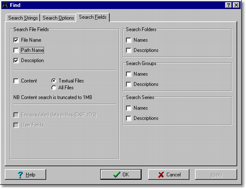
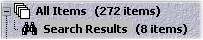

|
|
| ABC-View In-depth Articles |
ABC-View helps you organise your photo collection
By Nils Haeck
5th June 2002
Introduction
 |
Everyone that starts with digital photography will find
that the digital photo collection will accumulate quickly, and that
sooner or later some help is needed to organise it. ABC-View Manager (ABCVM) is a new tool for the Windows™ platform that is designed from the start to assist with this. |
ABCVM will grow with your needs, it can work with a few hundred photos
just as easily as with hundreds of thousands.
Read more in this article to get introduced to the basics and some helper
functions, like emailing downscaled pictures, batch renaming images, adding
descriptions, searching for keywords and finding duplicate and similar
images.
Step 1: Download ABC-View Manager
First of all, download your own copy of ABCVM directly from ABC-View's website. ABCVM is shareware ($29), but you can try it for free, with full functionality, for 20 days (counting only the days that you use ABCVM).
| After download, install the software in the usual way, and then click on the desktop icon that is created. |
Step 2: Browse your drives and folders
ABCVM will open with a list of your drives on the left and an empty viewing
area on the right. You can adapt the layout of the screen and the backgrounds
to your own taste, but for now we will stay with the orinal configuration.
It all works a bit like Windows Explorer. You can open drives and folders under My Computer by double clicking on them, or clicking on the little [+] in front of them.
Step 3: How to add multiple folders
Here's an important difference: Explorer works just with the contents
of one folder, while ABCVM is able to show combined results of multiple
folders. This is why there's a white square (checkmark) in front of each
folder. Click it to add the contents of the folder to the main collection.
You can add multiple folders this way. Let's assume you have these folders
with photos. The first (Holiday) and the second (People).
- [+] [ ] C:\Pictures\Holiday\
- [+] [ ] C:\Pictures\People\
You can add both folders by checking the white square:
- [+] [v] C:\Pictures\Holiday\
- [+] [v] C:\Pictures\People\
Above, you will notice that All Items shows a number, e.g.
- All Items (395 items)
Now click on All Items and you will have the combined result of Holiday and People. All these files are visible in the right viewing area.
Congrats, you just created your first combined collection! With some practice you can use this to quickly create a subcollection of all your files that you want to search.
Step 4: List your photos
ABCVM will start up showing thumbnails of
your images. These are mini-versions of the original images. When hovering
over these thumbnails with the mouse you will notice more info on the
photo including it's date, size and folder.
If you want even more information, then turn to Details
View (F12). In this mode your photos are listed in a table with
the columns showing all kinds of details. Return back to Thumbnail
View (F8).
You can adapt ABCVM to show other size thumbnails, or other details, through
the options (thumbnails and fields tab).
Quickly change the display mode with the tool buttons just above the viewing area. You can hold your mouse over a toolbutton to see what it does.
 Step 5: Sort your photos
Step 5: Sort your photos
With many photos in your list you need means to find the right one. Often, it helps to sort photos. This way you can easily find a photo, for example:
- Sort on Date to find photos of a specific event of which you
remember the date, e.g. a birthday or a visit to Disneyland.
- Sort on Name to find photos of people or events, provided that
you rename your photos to meaningful names (instead of for instance
DSCF0001.JPG)
- Sort on Similarity to find images that are alike! This will
help you to find downscaled and adapted copies
of the same photo.
- Randomize your items. Randomize is not really a sort method. It just shuffles your items so that they are in no particular (random) order. Ideal for a slideshow.
You can sort in a few different ways. There are the toolbar sort options,
you can use the menu Tools > Sorting >, or you can rightclick
on items and then select Sort List > .
You can also click on the columns to sort
by them, another click reverses the list.
 Step 6: View your photos
Step 6: View your photos
You might have already noticed the small preview
image in the lower left corner when clicking on a particular thumbnail.
When you double-click on any image, this preview image is enlarged to
full-screen mode.
In full-screen mode you can still navigate through your photos. Simply
use the Page Up and Page
Down buttons to go to previous and next image. With the Pause button
you can start and stop the slide show. Go
back to the normal mode with the [Enter] key or double-click.
In both modes you can get more info on a photo by rightclicking and selecting
Properties. If you are working with digital
photos, you can see the EXIF information
that was generated by your camera, under Tags.
 Step 7: Email photos
Step 7: Email photos
Now it's time to start doing something useful instead of just admiring the images! One tedious task, that often returns if you own a digital camera, is to email your friends the pictures that you took.
| Warning: modern cameras produce pictures that are quite large files, and usually much too big to send as attachment |
ABCVM can downscale and compress the photos you want to email, and attach
them to your email message automatically.
First, select the photos you want to email. Just click the first one,
then add any additional ones by holding [Ctrl] and clicking them. Continue
until you have selected some ten images that you want to email.
Next, you click the toolbar button  Email-a-Friend...
Email-a-Friend...
 |
In the dialog that appears, you'll see
your photos listed. Simply check the checkbox saying Reduce
Image Size. The default email size is 500x500 pixels max, but if you want bigger or smaller images attached, you can change this. ABCVM automatically displays the target size of the images. When you click OK Next, your email will be generated. ABCVM will connect to your email client, e.g. Outlook Express or any other MAPI compliant email program |
You can finish the email there, perhaps add subject and message text and then click on Send.
Note that ABCVM creates temporary copies to attach to the email, and once sent, these copies are automatically removed. You don't risk loosing your originals!
Step 8: Batch-rename images
Your camera is really creative with its names for the photos. Usually
this is something like DSCFxxxx.JPG, where the xxxx stands
for the current index number.
Some may like these fancy names, but most people like useful
names better. You can use Exlorer to change the name of a file,
but then you will be busy for a while, if you have to rename a series
of 30 pictures individually from last big "grandma's 80th birthday"
event.

You can select the images you want to rename, then click Tools
> Rename (F2) to start the dialog shown above. Type a new mask,
keeping some ## characters in. Each # is a number.
You can keep the old numbering, but you can also opt to number the series
starting from 1, select new numbering.
Have a look at the preview columns that show how your filenames will look
after renaming. If there's any naming conflict
with existing files, you'll see them listed under the column Conflict.
Click on Yes to do the renaming.
Hang in there to become a real pro!
Step 9: Adding descriptions
What about adding some descriptions? Just a line of text added next to each photo will help identifying it quickly later, when you start searching for a specific one.
Select one image or a bunch, then hit Describe Items (F3) to make the description pane show up. Click on OK to store the description.

You can see your descriptions in details mode (F12) or by hovering
over the item. Note that you can add one description to multiple items
at once.
When you add descriptions with ABCVM, they will be stored in the collection,
which you can save. Reload the collection next time you start ABCVM.
| So when working with descriptions, don't forget to save! Choose Collection > Save or Save As... from the menu. |
Step 10: Finding keywords
Pfew. What did all this work bring you? So if you either named your images, or you added descriptions, and perhaps used a good naming scheme for your photo folders and subfolders, you can use ABCVM's powerful find filter to search for just the photos you want.
Click on All Items, then rightclick and select Find. The search function will now work on all the images in the collection. In the dialog that pops up you can type some search phrases.

Also pay attention to where to search:

Sometimes it is useful to check Path Name. Check Content if you are not searching photos but textual files (Word documents, text files). The search can look inside these files to find matches.
When you click OK, the search will conduct and you can see the results
in the special search "subfolder"

 Step 11: Duplicates and similarity
Step 11: Duplicates and similarity
For the real pros!
ABCVM can find duplicate files. Sometimes,
you copy an image and forget to delete it later, or you download an image
which you already have under another name.
ABCVM can even find similar images. This
is especially useful if you have downscaled versions of originals, or
versions that have text added or logos.
Both functions can be found when rightclicking on All Items, and selecting Add Filter >. If you want to learn more about similarity searches, then read this article.
This concludes a not so brief introduction to ABC-View Manager. Hope you like it!
Download ABC-View Manager Back to article index
| Page last changed 19Jan2004 - © ABC-View 2001-2004 | |||
|